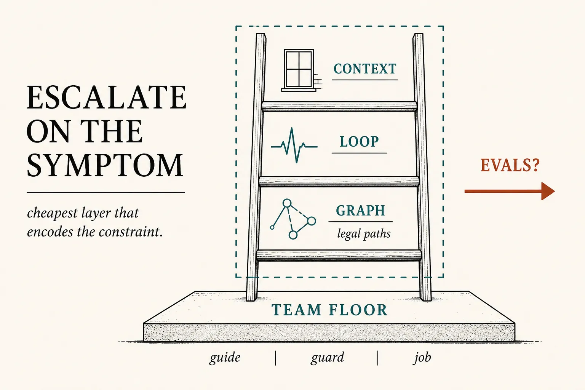
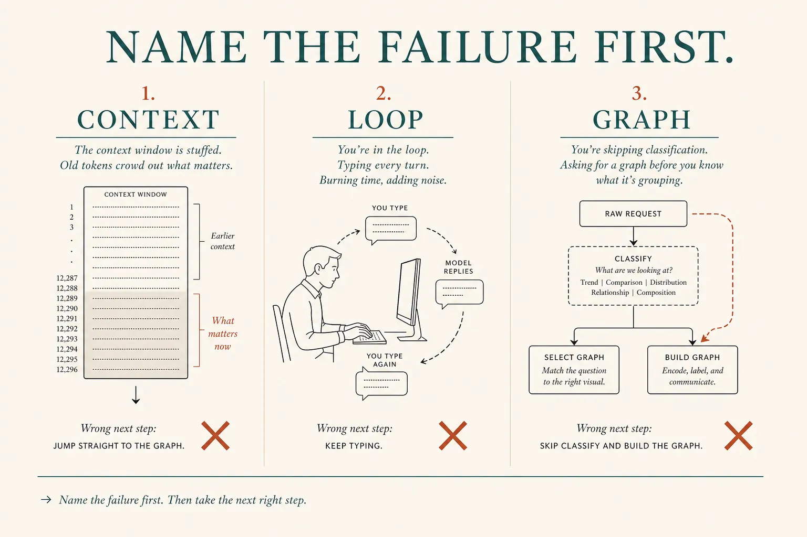
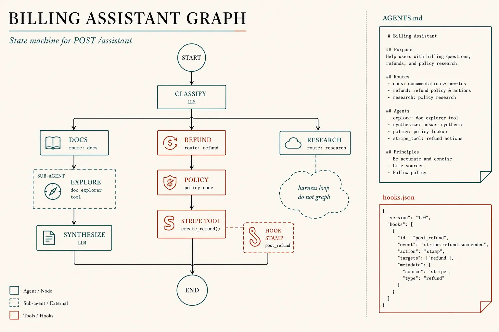

Connecting the stack
Escalate on the symptom
You have the machines. Tonight is the design review. Name the failure, then climb one rung. A stuffed window is not a graph problem. A missing heartbeat is not a LangGraph install. Classify-before-Stripe is. Harness and the team floor wrap every rung. Evals decide if you keep the climb.
What this is. A decision procedure for a developer and a team lead: when context engineering is enough, when to add loop engineering, when to draw a graph (usually hybrid), and when to stay put. Anthropic: simplest solution; add complexity only when it demonstrably improves outcomes. Building effective agents
What this is not. Re-teaching tokens, skills, hooks, or isolate·brief·return. A vendor ladder you must climb. “Prompt engineering” as a fourth religion — packing the call (0003) and the Guide (0015) are that layer. Plugins still wait.
- 1 · ContextWindow is the failure. Catalog, JIT, compact, notes.
- 2 · LoopHeartbeat is the failure. Verify, stop, schedule.
- 3 · GraphA path must always hold. Hybrid: holes for agents.
Harness (0007) and team floor (0015) are not rungs. They wrap all three. Measure before you keep a rung (0014).

Architecture first. Climb on a named symptom. The box and the floor are always on.
Name the failure first
Context engineering is the attention budget: smallest high-signal set, not a second model. Loop engineering is who prompts next so you are not Enter. Graph engineering is encoding paths you already know — a loop is already a tiny cyclic graph; you draw more edges when hope skipped a step. Effective context engineering · 3 Years of Graph Engineering

Wrong jump: stuffing the prompt, then installing a graph. Right jump: the column that matches the bug.
- Developer For this ticket or feature: which rung encodes the constraint? Leave the rest alone.
- Team lead For the repo: which Guide / Guard / Job files make that rung the team’s, not a private prompt.
One billing graph · the whole stack
Same SaaS as 0014–0015: React, API, Postgres, Stripe, POST /assistant. You can name classify-before-Stripe. Docs need a search hole. Competitor research cannot be pinned. That mix is a hybrid graph, not a loop hoping, not a DAG of fake research stages.

Load-bearing picture. Nodes you drew. Holes you left. Files the team shares. Hook on the till.
Files + graph · one refund ticket
# GUIDE — AGENTS.md (prompt layer the team owns)
- policy.check before any Stripe tool
- docs: dispatch explore, synthesize in the lead
- research: do not force stages; harness loop
- never push main; @reviewer on graph/PRs
# GRAPH — ops (POST /assistant)
START → classify(code)
docs → Agent(explore) → llm(synthesize) → END
refund → policy(code) → [ok] stripe(tool) → END
└[no] explain → END
research → END # not a node; outer harness loop
# JOB — .cursor/agents/explore.md (docs hole only)
# JOB — .cursor/agents/reviewer.md (dev PRs)
# GUARD — .cursor/hooks.json + CI
on stripe.refunds.create:
deny unless state.policy_ok == true
on git push origin main: deny
# HARNESS still: allow · run · stop · show
# EVAL: 20 Zendesk tickets; keep graph iff pass rate moves
What this shows. Context work is already in the Guide and the explore job (thin lead window). Loop work is the harness heartbeat and the research branch. Graph work is the edges you would bet a refund on. The hook is the Guard when the model still writes the slip. Hybrid means you did not graph the research cloud.
Skill: pick the rung
Context when RAM is the bug. Loop when you are still the heartbeat. Graph when a path must hold. Full is one refund through every file.
Same assistant, four looks
Always on, not rungs
Prompt / Guide
Pack the transcript. Put the brief in git. Skills load chapters. This is enough until the window or a path fails.
Harness
Allow, run, stop, show — around a one-call, a loop, or a graph. Cursor is this box. Card.
Evals + floor
Keep a rung only if a number moves. Humans still stamp merge. Evals · Team floor.
Parked: plugins, LangGraph APIs, pass@k. “Always hybrid” is not a slogan — it is what 0013 already said: mix node types when you have both fixed edges and open holes. If you cannot name the path, do not draw it.
Check
Primary source. Building effective agents (simplest first; add complexity when it demonstrably improves outcomes). Context: Effective context engineering. When not to graph: 3 Years of Graph Engineering. Layers: Deep Agents vs LangChain vs LangGraph.
Card: stack choice. Machines: workflow vs agent · context · loop · graph · harness · team floor · evals.